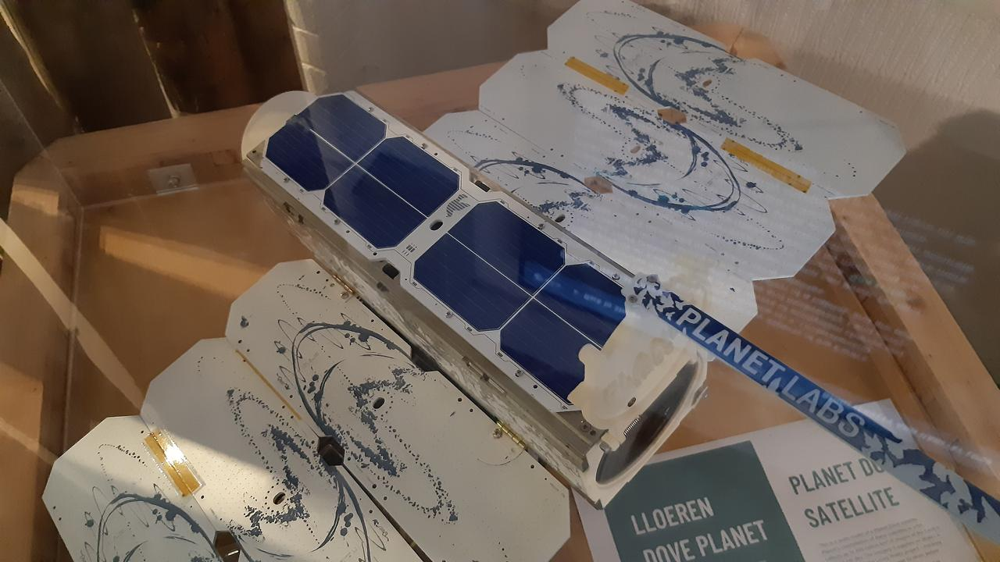
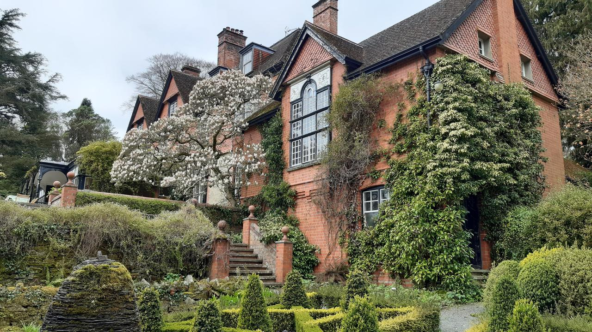
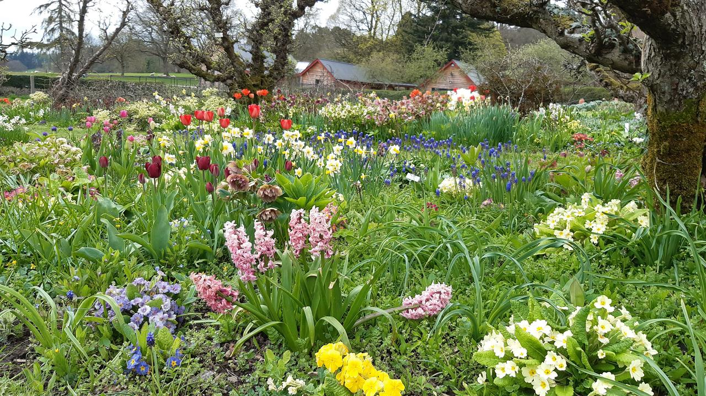

Yesterday was our first proper "touring" day, and we made the most of our relative
(but not actual) closeness to Machynlleth
to visit
the Centre for Alternative Technology (CAT) - an
inspiring organisation that specialises in sustainable living.
When we first visited CAT back in 1995, it turned out to be a perfect day both
of us fondly remember. We have returned several times since and enjoyed
watching the site, educational work and influence of the CAT organisation
flourish and grow.
As someone fascinated with technology (and I'll informally define that as,
crafting the world through creativity and coherent invention to better engage
and interact with it to some valuable aim or benefit), the "alternative" part
of the CAT name has always appealed to me.
I'm a software engineer, a job most folks imagine is at the heart of "new" or
"hi"-tech. Yet I, and many of my colleagues, will tell you that "new"
and "hi"-tech is not necessarily the same as "good". The focus on "alternative"
appeals to the engineer in me: it means I'm not constrained to frame my
thinking via the tired stereotypes found in our culture.
A good example of what I mean is the first thing you see upon arrival at CAT, a
water powered funicular railway.
Arrival at the Centre for Alternative Technology involves ascending a mountain in a water powered funicular railway.
Clearly there is a lot of technology going on here, but it's not a computing
"tech" mode of transport like a Segway or self-driving car. If you
understand simple physics, it's easy to figure out how it works. That it runs
on water, an abundant resource in rainy Wales, means the energy cost of running
the system is very small and doesn't involve polluting the environment
(rather, it complements and integrates the ambient environmental conditions).
The lake at the top of the railway is the source of the water.
I like this enlarged view of technology, beyond just the thing being imagined
or a "tech" mode of creation.
Sustainability, impact and
the life-cycle of the "tech" is carefully considered. This is a very
different approach to "smaller, faster, cheaper" gizmos and apps inflicted upon
"consumers", created and made with a development process based on the mantra of
"move fast and break things",
whose aim is to maximise shareholder profit. Put simply, there is a
philosophical aspect to tech that is, in my experience, often missing or
actively discouraged in "tech" culture.
And so, we chose to take part in the guided tour because we wanted to see and
hear about the centre from our guide: someone intimate with the ethos and
practicalities of such an enlarged outlook to technology.
Despite being
semi-regular visitors over the past 27 years or more, both Mary and I learned
so much from our guide, Joel, who patiently fielded questions and engaged our
group both with the story of CAT and the various things found therein (such as
modular Segal method buildings, or the
diverse number of energy solutions, such as the hydroelectric
generator shown below).
The flow of water from the top lake to the lake used by the railway drives the hydroelectric generator.
CAT is a very stimulating and eye-opening place, with much of the location taken over with
practical educational projects that both illustrate and explain the many
aspects of "alternative" technology.
As a teacher, I enjoyed their approach to engaging with folks wishing to learn.
Rather than a "how to use" video or documentation that fills your head with
facts, we were left to experiment
and engage directly with "alternative" tech. For instance, the
wind-powered seat (shown below), beautifully illustrated how little wind is
needed to achieve some useful end (in this case, lift and lower a person).
A wind powered chair gently moves the occupant up and down.
What you don't see in this photograph of me sitting on the chair, is the
relatively small windmill attached by a pulley system to the seat. I have to
say this was a pleasantly gentle and rather fun way to prove a point.
Architecture is also an important aspect of CAT, with many of the buildings
demonstrating interesting approaches to creating space for living, working and
enjoying life. Often unusual but sustainably sourced
materials are used (straw bale, or rammed earth for instance) and those aspects
of the building are thoughtfully brought to visitor's attention.
CAT is also a thriving educational organisation and, while we were wandering
the site, we noticed groups of students learning about "alternative" technology
in buildings built with such technology, created by the folks running the
educational programme.
I rather like the directness of this approach. If I were
a student looking to engage with these things, who wouldn't want to learn in
such a way?
The sustainably designed and built conference and education centre.
Finally, CAT isn't just about "alternative" tech, but also contains information
about alternative uses of "traditional" tech. For instance, as a
space-nut, I was fascinated by their interactive display on using small earth
observation satellites to gather data and monitor changes in the landscape.
Space bound technology is no longer just the preserve of large governmental
agencies like NASA, and the open data received can be put to all sorts of
interesting and important uses.
A small earth observation satellite.
If you're ever in mid-Wales, I heartily recommend CAT. Mary and I have always
had thought provoking visits.
Clearly CAT won't appeal to everyone, but nobody can ignore their hard work to
promote a much needed different perspective... an alternative vision of
"technology".
Our meal at the end of day 2 was lots of fun. As we walked into the
pub we met again the lady who had found Mary's phone on day 1, struck up a
conversation, and she joined us for a sociable evening of chatter over rustic
grub. It turned out Caroline was a teacher and so we had a fine old time
going over teacher talk. We shared classroom based triumphs and tragedies and
the usual moans and gripes about the state of the education "system"
that all teachers appear to share.
The next morning, as expected, it was raining and the country was covered in
low rolling mist. Nevertheless we set off in good spirits and determined to
climb up onto the ridge for the views.
Little did we know how different our situation would be by the end of the day.
Walking towards the Black Mountains, in the rain.
After a couple of relatively swift miles tramping the rolling countryside to
Pandy, we started to ascend the edge of the Black Mountains. Since we were
laden with all our clobber this took a while: but our mantra was "slow and
steady does it". We could have stomped up, like I usually do, but we decided to
save ourselves for the 15 miles of walking over the ridge we would need to
complete to get us to Hay-on-Wye by the end of the day.
The first sight to greet us upon completing our ascent was an ancient hill
fort from pre-Roman times. Even after 2500-3000 years, the dykes and ditches
that marked the boundaries of the fort were an imposing site, especially as
they loomed ominously out of the mist.
The ramparts of a 2500 year old hill fort.
And so, it was at this point, we resigned ourselves to the fact that the
weather would be against us for the day. There would be no beautiful views
over mountains or down into valleys for us. In fact, we could only see about 20
metres ahead of ourselves. Fortunately the path for the Offa's Dyke trail was
obvious, so we just had to trudge on (and on, and on).
It's hard to remain motivated when all around you is freezing fog. There's no
sense of progress and it's impossible to look back to see how far you've come,
or look ahead to a marker in the distance as a target to aim for. Yet sometimes
we would pass way-points that marked the tops of peaks, and this photo, taken
perhaps just before lunchtime, is a good indication of our conditions.
Wet conditions on the ridge.
We also felt quite alone: by lunch we hadn't met a soul. Yet we were not the
only ones tramping the hills that day. Huge piles of steaming dung alerted
us to the presence of others, just out of sight.
And then suddenly, we came upon the group of wild horses grazing the grass.
They took a look at us, pondered for a few seconds why on earth two humans
would be up there with them, and then returned to the more pressing task of
grazing again.
Wild horses.
At some point mid-afternoon the conditions under-foot became much more boggy
and the path turned into a set of paving slabs. We joked that Offa must have
sourced them from the local garden centre...
Offa's paving slabs.
...but we were thankful that they helped us avoid tramping through the black
peaty mud. Perhaps this is how the mountains got their "black" name?
We also started to realise that not all was well for either of us.
My feet and ankles ached and while Mary found it comfortable to walk up hills,
and over the levels, descending was very painful because of her right knee.
This got gradually worse throughout the day, to the point that it couldn't be
ignored, and we started to talk about what we might do about the situation.
As you can see from this photo, we were determined to put a brave face on
things but I think we both realised things were not going as they should (we're
no longer spring chickens!).
Drying off for an afternoon snack.
Then, around mid-afternoon we met the first people of the day. Two fellow
walkers appeared out of the mist towards us, and we shared some encouraging
words. Yet just as we were commenting how deserted the ridge was, a young
man came from the same direction as us at a fast pace. He stopped to
say a quick "hello" only to realise his small back-pack had come undone. He
checked his things (nothing missing), re-adjusted his equipment and stomped off
in the direction of Hay -- a momentary mist-clad apparition accelerating into
fog. We parted company with the other couple and wished
them well, only to encounter a group of
Duke of Edinburgh participants (in the UK we have
something called the "Duke of Edinburgh Award" for teenagers, that encourages
them to explore and encounter nature and outward bound activities). We helped
them with some map reading and then, gazelle like, off they sprang into the
mist leaving us to ponder our ever slowing pace and the fact that, like London
buses, we had met nobody all day only for three different parties to turn up
within minutes of each other.
The mist lifted, and we could see the way down into the valley.
As we got to the end of the ridge, the mist lifted and we were able to finally
see some views. Yet these were not to last since we had to make our descent,
and it was here that things got very tricky.
My poor Mary had to endure intolerable pain in her knee as we made our way
down the side of the mountain towards Hay-on-Wye. The first of several steep
descents should have only taken us perhaps 20 minutes but, in fact, took an
hour. We had several more descents to go until we reached our destination.
Yet we spied a line of cars parked in the distance, and this proved to be our
way out of the difficult and painful situation.
It was clear the final couple of miles to Hay were all down hill with
difficult conditions under foot. My feet were a constant source of a dull ache,
and if I stopped walking the pain would become strong and resuming the walk
took lots of effort. Mary was clearly in a lot of pain with her knee, and so
our journey was no longer the happy, if tiring, adventure we had enjoyed up
until this point.
As we approached the parked cars I tried a few local taxi companies, but nobody
picked up.
Thinking we may need to just press on, I spotted one of the cars was occupied.
I tapped on the window to find a man of a similar age to ourselves inside. He
told me he was there just to enjoy the view and to get out of the house for a
while. I explained our situation and he very kindly offered to drop us off in
Hay.
What a relief.
Except, he suddenly remembered, "by the way, I have COVID".
He had driven to the beauty spot just to get out of the house since he had been
isolating for the past few days.
We had a quick (socially distanced) chat about the potential logistics of the
situation and worked out a way for us to get a lift, but with him masked up
with the addition of a scarf around the lower part of his face, and us sitting
away from him with all the windows of the car open.
I have to admit, we made the right decision because our speed due to the knee
situation was at a snail's pace and it would have taken several hours to cover
the final two miles into town.
In the end, we had a fun chat with Carl (our impromptu driver) and I
think he enjoyed the sense of adventure the situation presented. We were
deposited right outside our guest house in Hay, got to our room and collapsed
into the shower.
After a couple of hours of rest we had stiffened up.
I examined my feet and found they were covered in blisters and Mary's knee was,
to use her words, "shot to pieces".
It was clear that our journey to walk Offa's Dyke was coming to an end and we
both felt sad and deeply frustrated by the situation. As Mary put it, "I feel
fine from the right knee up", and I was also in fine fettle from the ankles
up.
Yet we could not continue given our different ailments.
And so, we decided to change plan.
Over dinner in the Blue Boar Inn (excellent food and beer),
we worked out what to do next. We'd booked places to stay along our route,
and we certainly didn't want to abandon our holiday, yet we clearly couldn't
walk to the extent that we would need to, and it was clear our current
situation required us to rest and recover before attempting any further
distance by foot.
In the end we decided to transform our holiday from a
"by foot" affair to a touring holiday with a car on hand,
which leads us to day 4's adventures.
We booked a taxi to pick us up at 9am the next
morning and take
us to Hereford station. From there we took a train to Shrewsbury and another
short taxi hop to the village where Mary grew up, her parent's house, and the
place where we'd parked our car.
The journey was uneventful, the highlight being the local taxi driver from
Hay-on-Wye.
Within seconds of picking us up he had asked us about our
reason for being in the place and Mary reciprocated by asking what living in
such a beautiful place as Hay-on-Wye was like.
"Well", he ruefully started, "there's us, and then there's them."
Knowing he had a captive audience for at least the next 45 minutes, he went on
to explain that Hay-on-Wye has a highly stratified population. By "us" he
meant those born and bred in the place scraping a living via a few relatively
menial jobs. By "them" he meant, "city folk who sell up, move here and lord it
all over the place like they're millionaires". This included the owners of
various "lifestyle" shops, coffee houses in the town, and artisanal crafty
places.
We hadn't seen that much of Hay-on-Wye so didn't have any evidence to check his
appraisal of the situation. We were sympathetic to
his cause and he was clearly enjoying putting the world to rights. As he
dropped us off he even commented that he'd had a jolly old time getting things
off his chest. Clearly, we were good (captive) listeners.
Once we picked up our car, we made our way back into Wales and our place of
rest for the next night: Kington. During the journey we realised we were
passing close by the village where Mary's widowed aunt (who we hadn't seen
since before the pandemic) had settled with her new partner. We called ahead
and made arrangements to drop our stuff off in Kington before joining our
relative for a lovely meal and evening of catching up. It was lovely to see
she was so settled and happy with her new partner.
This morning, after a good night's sleep and a lovely relaxed breakfast we
decided to drive back to Hay-on-Wye and look around... with both of us being
avid readers, the thought of all the book shops, for which Hay is so famous,
was a real draw.
Yet, within minutes of our arrival we could see yesterday's taxi driver was
onto something.
Hay-on-Wye was clearly a beautiful place, but had
transmogrified into a sort of unintentional parody of itself. We found shops
full of pointless crap, new age treatment centres that gave the place a smell
of cheap incense, and a faux farmer's market full of "artisans" selling yet
more nick-nak crap (there wasn't an actual farmer in sight).
Mary's knee was also playing up again.
Despite our very gentle pace we ended up in the chemist's shop to buy
a knee support to try to help with the pain. After following directions to the
local public toilets (so Mary could put on the strap under her trousers), our
poor opinion of Hay-on-Wye was cemented by finding the cost of taking a pee
was 30 pence.
Our experience of Hay is that it's a tourist trap of the worst kind,
with no actual investment in the local community. Just scratching the
surface indicated that most activities involved extracting money from naive
visitors with no sustainable local economy to speak of.
We quickly escaped Hay-on-Wye and decided to follow our noses to
Hergest Croft gardens. On the way Mary called the UK's
111 service (our NHS's first point of contact for non-emergency medical
situations). A callback with a physiotherapy nurse was duly arranged, and we
subsequently found ourselves walking in some magnificent spring gardens.
The house in Hergest Croft gardens.
There are over 70 acres of different types of garden at Hergest Croft, and the
house had a wonderful cafe full of vegetarian food. Our slow and steady
wandering through this place was just the antidote we needed to the plastic
pastoral fakery of Hay-on-Wye and the travails of the previous days walking.
Spring flowers.
Whilst exploring the rhubarb patch in the kitchen gardens the phone rang again
and Mary found a park bench to talk to the friendly nurse tasked with triaging
her knee.
In the kitchen garden.
To cut a long story short, I'm currently typing this in the waiting area of
Llandrindod Wells hospital's minor injuries unit while Mary is being seen by
a physiotherapy nurse. All told, it has taken around three hours from Mary's
first contact to her receiving treatment for her knee.
Waiting in the minor injuries unit at Llandrindod Wells hospital.
We'll check into this evening's rest-stop and find a good pub for this
evening's meal. Tomorrow will be another day of gentle poddling andante con
spirito.
Just like real life, our Offa's Dyke journey is turning up all sorts of
unforeseen and challenging situations... yet Mary and I continue to support and
encourage each other as we improvise and adapt to an unforeseen touring
holiday.
My feet are feeling fine today, so perhaps -- assuming the nurse doesn't tell
Mary she needs a new knee (highly unlikely) -- we'll even get some more walking
in before we've finished.
A few hours later, in our B'n'B for the evening: After a series of tests,
it turns out that Mary's knee is not permanently injured, but just over-worked,
bruised and thus complaining. The nurse told her she needs to rest it for the
next three days or so, while still keeping it moving so it doesn't stiffen up.
After that, I guess we'll be playing it all by ear when it comes to rambling
Offa's Dyke (of which we've already walked almost 60 miles in three days).